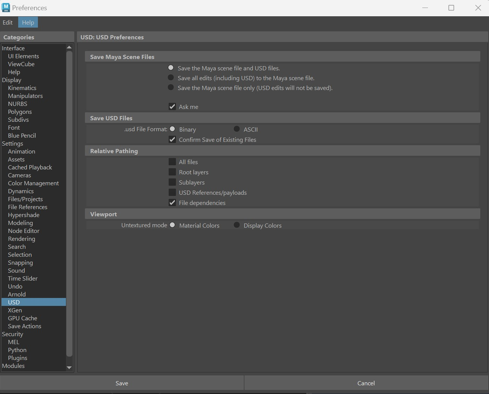

USD Preferences
The USD section in Maya's core preferences stores your preferences for USD data in your Maya scene. In these preferences, you can set defaults for your Maya scenes containing USD data.
To find the USD section in the Preferences Window:
- Select Windows > Settings/Preferences > Preferences > Settings > USD from the left panel.

Save Maya Scene Files
This radio button is also found when you select File > Save As when you have USD data in your Maya scene file in the Save USD Options dialog.
- Save the Maya scene file and USD files (recommended): Select this option to save your Maya scene file (.ma, .mb) and your USD files (.usd, .usda, .usdc) to disk respectively.
- Save all edits including USD, to the Maya scene file: Select this option to save your current Maya session with in-memory USD edits into a Maya scene file on disk (.ma, .mb). This option serializes your USD edits into your Maya scene file. When you open Maya again, your in-memory USD edits will persist as unsaved data. Important: per layer, any data exceeding the limit of 2GB will not be saved. This option is not recommended as data loss can occur.
- Save the Maya scene file only (USD edits will not be saved): Select this option to ignore all USD edits and save only your Maya scene file (.ma, .mb).
Note:
Deselect the checkbox for Ask me in this dialog to have Maya remember your option choice. You can also achieve that by selecting Don't ask me again in the Save USD Options dialog.
Save USD Files
Specify your USD file format in this window. Choose between one of the two following supported file formats:
- Binary (default): Choose binary to save your file as .usdc, which is optimized for machine-readability.
- ASCII: Choose ASCII to save your file as .usda, which is optimized for human-readability.
Note:
toggle Confirm Save of Existing Files to display the confirmation message of the existing layers being overwritten with edits before saving the files.
Relative Pathing
- All files: When on, all of your files will be written as relative paths.
- Root layers: When on, your USD root layer file will be written as relative paths to your Maya scene file.
- Sublayers: When on, all sublayers will be written as relative paths to their parent layers.
- USD References/payloads: When on, any USD references or payloads will be written as relative paths to their respective edit target layer.
- File dependencies: When on, any file dependencies, such as textures or Maya references will be written as relative paths to their respective edit target layer.
Viewport
Choose what your colors should display as in the Viewport when in untextured mode. Select from Material Colors (default) or USD Display Colors. Select display colors when working in USD as material colors may be inaccurate from the endless types available (base color, specular color, transmission color, subsurface color, sheen color, coat color and more).